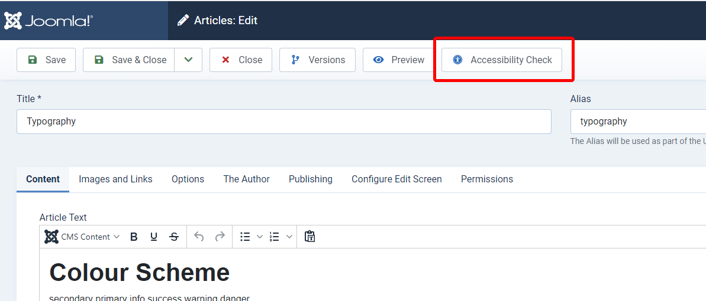
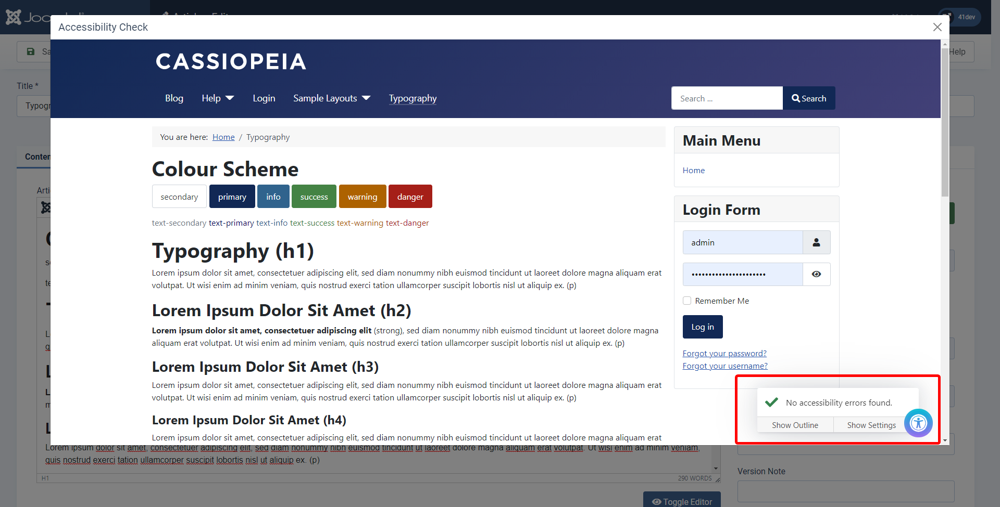
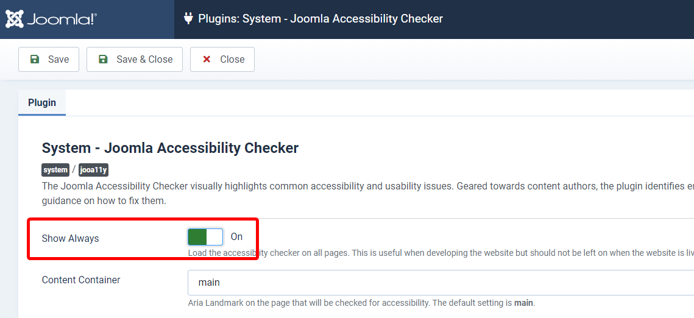

How To
Jooa11y is included by default in Joomla 4.1 and higher.
Using with Joomla!
The Joomla Accessibility Checker (Jooa11y) is a default system plugin that operates in two modes.
Mode 1 - Check Content
This is the default mode for working with Jooa11y. As soon as you have saved an article you will see a new button on the toolbar called Accessibility Check.
Select this button and the article will open in a modal window and the checker will run on the content you just created.


Mode 2 - Show Always
This enables the checker on all the pages of your site.
As it is visible to everyone it is not enabled by default. You must enable this mode in the plugin settings and it is recommended that you only have this enabled while you are creating your site.
